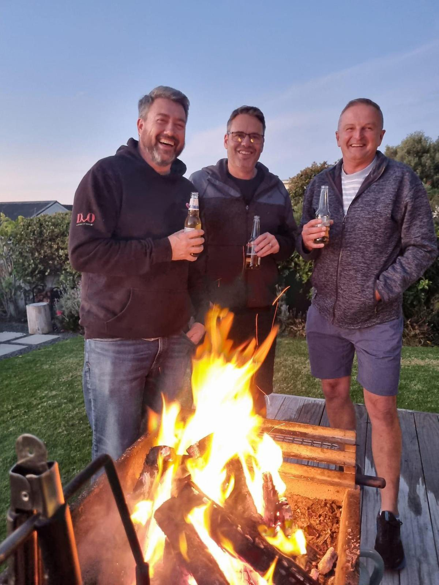
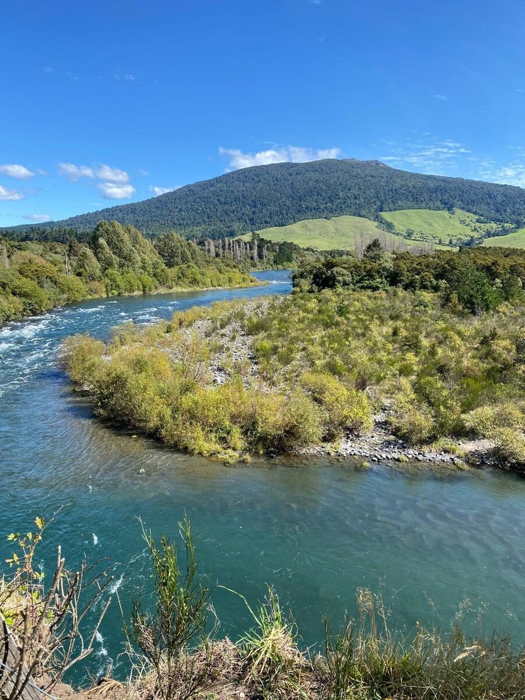

The retreat
What a few days here looks like.
Mornings are usually out and about. Afternoons are yours. Evenings are a proper feed and whoever's around.
No two retreats are the same. We build each one around who's coming and what they're after. Nothing is compulsory either. Skip whatever you like.
What you can expect
The experience
Getting outside
Walks on the tracks nearby, through the trees and along the water. For most men this is the part that does the work.
On the water
Trout fishing on the Tongariro, and the thermal pools when you want to sit in hot water and do nothing.
Time to yourself
Nobody minds if you take a coffee and disappear for an afternoon. That's half the point.
Something to take home
A few practical ways of thinking that still make sense once you're back at work.
Talking, if you want it
Some of it is led, most of it just happens on the track or over dinner. Nobody gets put on the spot.
Good food
Three proper meals a day, cooked here and eaten together. Nothing fussy, and always enough of it.
A rough shape
Roughly how it goes
A rough shape, not a timetable. It moves with the weather and with what you feel like doing.
Getting there
Arrive in the afternoon, drop your bags, meet the others. First night is dinner and an early one if that's what you need.
Out into it
A full day outside. A walk, a fish, a round of golf, whatever the weather allows. Back for a feed and a fire.
The middle of it
By now you know the others and you know the place. This is usually where men properly switch off, and we're around if you want to use us.
Heading home
A slower last morning to work out what you're actually taking back with you. Then go when you're ready.
Where you stay
A quiet home, not a facility.
You stay in a comfortable, private home in a quiet street in Turangi. Warm, lived in and easy, the kind of place that already feels calm when you walk in.
There are proper bedrooms, shared living space to spread out in, a kitchen where the food actually gets cooked, and a section out the back with the fire pit. Beds are made up before you arrive, and linen and towels are provided.
The house takes a maximum of four guests. When a group books it, the whole place is theirs for the stay.

A look around


These are our own photos of the actual house. Nothing here is stock.
Food & meals
You'll eat well, and you'll eat properly.
Food does a lot of the quiet work on a retreat. Three meals a day are cooked on site and eaten together, and they're built to keep you steady rather than to impress anyone.
Breakfast
Cooked or continental, whatever suits the day. Eggs, good bread, fruit, yoghurt, oats, proper coffee.
Lunch
Usually packed and taken with you if you're out on the river or the tracks. Otherwise it's a decent lunch back at the house.
Dinner
A solid feed around the table. Meat or fish, vegetables, something to go with it. Trout from the river when the fishing goes well.
Nutrition
Good protein, plenty of vegetables, fresh local produce and enough carbohydrate for the days you're active. No fads and no lecturing.
Anything you can't eat
Gluten free, dairy free, vegetarian, allergies, or anything a doctor has you avoiding. Tell us in your enquiry and it's sorted before you arrive.
In between
Tea, coffee, fruit and snacks are always out. Nobody goes hungry, and nobody has to ask.
A beer by the fire is nobody's business but yours. This isn't a drinking weekend, though, and if you'd rather the house was dry for your stay, say the word and it will be.
Coming as a group
Taking the house for your own group.
Up to four of you can take the house for the whole stay. No strangers, no one else in the place, and the days built around what your group actually wants to do.
One thing worth being clear about: the house isn't let on its own. You can't book it like a holiday rental and turn up with the keys. Every stay is hosted, and we arrange the programme, the meals and the logistics either way. That's the whole point of it, and it's what makes the difference between a house in Turangi and a retreat.
It also doesn't have to be heavy. Some groups come because one of them is having a rough time and the others want to be there for it. Others come because four mates want a few days out of the city, on the river, around a fire, with the cooking and the planning handled. Both are good reasons, and a group sets the tone for its own stay.
Location & privacy
Turangi, and why it works.
Turangi sits at the southern end of Lake Taupō, under the mountains. The house is tucked away in a quiet part of town. The river, the lake and the tracks are all a short drive, which means you get the quiet at night and everything else within reach by day.
It's roughly a four hour drive from Auckland, four and a half from Wellington, and under an hour from Taupō.
For the privacy of every guest, the exact address isn't published. You'll receive it once your place is confirmed. What's said here stays here.
Come prepared
What to bring
The weather here changes fast. Pack for all of it and you'll be comfortable whatever the day turns into.
Warm, weatherproof clothing
A proper rain jacket, warm layers, and something for cool evenings, even in summer.
Sturdy walking shoes
Broken-in boots or trail shoes for forest tracks and riverbanks.
Togs & a towel
For the thermal pools and the river. Bath towels and linen are provided.
Sun & the basics
Sunscreen, a hat, a reusable water bottle, and any medication you need.
An open mind
You don't need to prepare anything to say. Turning up willing is enough.
Your own gear
Bring your rod or your bike if you have them. If you haven't, that's sorted here.
Leave the laptop at home if you can. This works best when the outside world can wait until you're back.
Before you ask
Questions men usually have
Is this therapy or counselling?
No. Clear Head Retreat is a wellbeing and personal development experience. It's hosted, structured and honest, but not clinical. It isn't therapy, counselling, or a substitute for professional mental health care. If that's what you need, that's the better path, and we'll say so.
How long is it?
Most stays run three or four nights. There's no fixed package though. We work the length and the shape out with you beforehand, because every retreat is built around who's coming.
Can a group of mates book the whole house?
Yes. Up to four of you can have the place to yourselves, and we'll build the whole stay around your group.
One thing to be clear about: the house isn't let on its own. You can't book it like a holiday rental and turn up with the keys. Every stay is hosted, and we still arrange the activity programme, the meals and the days. Mention the group when you write and we'll talk it through.
Do we have to be in a bad headspace to come?
No. Plenty of men come because they're overloaded and need to reset. Plenty come simply because they want a few days in nature with good company. Both are welcome, and a group can set the tone for its own stay.
What will we eat?
Three proper meals a day, cooked on site and eaten together. Cooked or continental breakfasts, packed lunches on days out, and a solid dinner in the evening. Trout from the river when the fishing goes well.
Meals are balanced rather than fussy: good protein, plenty of vegetables, fresh local produce, and enough in them for an active day outdoors. Tea, coffee, fruit and snacks are always available.
Dietary requirements and allergies are catered for. Tell us in your enquiry, whether it's gluten free, dairy free, vegetarian or something a doctor has you avoiding, and it's handled before you arrive.
Where do we sleep?
In a comfortable private home in a quiet street in Turangi. Proper bedrooms, shared living areas, a kitchen and outdoor space. Beds are made up before you get here, linen and towels are provided, and the house is warm.
Do I need to be into the outdoors or fishing?
Not at all. Everything is offered, nothing is required. Plenty of men arrive having never held a fishing rod. The outdoors is the setting, not a test.
Will I have to talk about personal things in the group?
Only as much as you want to. Conversations are led, so nobody has to perform. Some open up straight away, others sit and listen for a while first. Both are fine.
Who else will be there?
If you come on your own, at most three others, plus your host. Everyone goes through the same short enquiry and conversation beforehand, so the group is considered rather than random. If you come as a group, it's just your group.
What does it cost?
We talk pricing personally once we know it's a good fit, since it depends on when you come, how long you stay, the size of the group and any extras. There's no online checkout and no obligation in enquiring.
What if the weather turns?
It often does. The plan flexes around it. Anything alpine or on the water only runs when it's safe, and there's always a good indoor and low-key alternative.
How do I get there?
Turangi is a straightforward drive from most of the North Island, roughly four hours from Auckland and four and a half from Wellington. Directions go through with the address beforehand.
What if I'm going through something serious right now?
If you're in an acute crisis, this isn't the right place, and the short conversation beforehand helps us both be honest about that. In New Zealand you can call or text 1737 any time to speak with a trained counsellor, or contact your GP. We can point you toward better-suited support if that's what you need.
Next step
If it sounds like what you need, start with an enquiry.
No commitment, just a short form and a conversation to see if it fits.